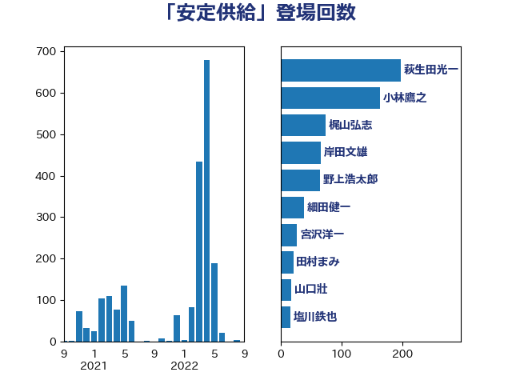

単語「安定供給」

| 萩生田光一 | 自由民主党 | 197 回 |
| 小林鷹之 | 自由民主党 | 163 回 |
| 梶山弘志 | 自由民主党 | 74 回 |
| 岸田文雄 | 自由民主党 | 66 回 |
| 野上浩太郎 | 自由民主党 | 65 回 |
| 細田健一 | 自由民主党 | 39 回 |
| 宮沢洋一 | 自由民主党 | 27 回 |
| 田村まみ | 国民民主党 | 21 回 |
| 山口壯 | 自由民主党 | 18 回 |
| 塩川鉄也 | 日本共産党 | 16 回 |
| 平山佐知子 | 無所属 | 16 回 |
| 菅義偉 | 自由民主党 | 15 回 |
| 中野洋昌 | 公明党 | 14 回 |
| 佐藤啓 | 自由民主党 | 13 回 |
| 田名部匡代 | 立憲民主党 | 13 回 |
| 林芳正 | 自由民主党 | 12 回 |
| 舟山康江 | 国民民主党 | 12 回 |
| 江島潔 | 自由民主党 | 11 回 |
| 大串博志 | 立憲民主党 | 10 回 |
| 小野泰輔 | 日本維新の会 | 10 回 |
| 滝波宏文 | 自由民主党 | 10 回 |
| 石井正弘 | 自由民主党 | 10 回 |
| 秋野公造 | 公明党 | 10 回 |
| 緒方林太郎 | 無所属 | 10 回 |
| 浜野喜史 | 国民民主党 | 9 回 |
| 田村憲久 | 自由民主党 | 9 回 |
| 紙智子 | 日本共産党 | 9 回 |
| 中川郁子 | 自由民主党 | 8 回 |
| 塩村あやか | 立憲民主党 | 8 回 |
| 太田房江 | 自由民主党 | 8 回 |
| 山田俊男 | 自由民主党 | 8 回 |
| 後藤茂之 | 自由民主党 | 8 回 |
| 本田顕子 | 自由民主党 | 8 回 |
| 武部新 | 自由民主党 | 8 回 |
| 緑川貴士 | 立憲民主党 | 8 回 |
| 音喜多駿 | 日本維新の会 | 8 回 |
| 三浦信祐 | 公明党 | 7 回 |
| 大島敦 | 立憲民主党 | 7 回 |
| 宮崎雅夫 | 自由民主党 | 7 回 |
| 本庄知史 | 立憲民主党 | 7 回 |
| 森本真治 | 立憲民主党 | 7 回 |
| 笠井亮 | 日本共産党 | 7 回 |
| 吉良州司 | 無所属 | 6 回 |
| 宮内秀樹 | 自由民主党 | 6 回 |
| 岡本三成 | 公明党 | 6 回 |
| 岩田和親 | 自由民主党 | 6 回 |
| 川田龍平 | 立憲民主党 | 6 回 |
| 平口洋 | 自由民主党 | 6 回 |
| 斉藤鉄夫 | 公明党 | 6 回 |
| 松野博一 | 自由民主党 | 6 回 |
| 梅村聡 | 日本維新の会 | 6 回 |
| 浅野哲 | 国民民主党 | 6 回 |
| 石川昭政 | 自由民主党 | 6 回 |
| 金子恵美 | 立憲民主党 | 6 回 |
| 佐藤英道 | 公明党 | 5 回 |
| 宮口治子 | 立憲民主党 | 5 回 |
| 山口晋 | 自由民主党 | 5 回 |
| 山岡達丸 | 立憲民主党 | 5 回 |
| 山田賢司 | 自由民主党 | 5 回 |
| 市村浩一郎 | 日本維新の会 | 5 回 |
| 河野義博 | 公明党 | 5 回 |
| 漆間譲司 | 日本維新の会 | 5 回 |
| 藤木眞也 | 自由民主党 | 5 回 |
| 長坂康正 | 自由民主党 | 5 回 |
| 高鳥修一 | 自由民主党 | 5 回 |
| 鬼木誠 | 立憲民主党 | 5 回 |
| こやり隆史 | 自由民主党 | 4 回 |
| 下野六太 | 公明党 | 4 回 |
| 伊東信久 | 日本維新の会 | 4 回 |
| 伊藤渉 | 公明党 | 4 回 |
| 宗清皇一 | 自由民主党 | 4 回 |
| 山口俊一 | 自由民主党 | 4 回 |
| 山本剛正 | 日本維新の会 | 4 回 |
| 東国幹 | 自由民主党 | 4 回 |
| 榛葉賀津也 | 国民民主党 | 4 回 |
| 田村智子 | 日本共産党 | 4 回 |
| 石井啓一 | 公明党 | 4 回 |
| 神谷裕 | 立憲民主党 | 4 回 |
| 葉梨康弘 | 自由民主党 | 4 回 |
| 須藤元気 | 無所属 | 4 回 |
| 中村裕之 | 自由民主党 | 3 回 |
| 北側一雄 | 公明党 | 3 回 |
| 北村経夫 | 自由民主党 | 3 回 |
| 塩田博昭 | 公明党 | 3 回 |
| 大石あきこ | れいわ新選組 | 3 回 |
| 大野敬太郎 | 自由民主党 | 3 回 |
| 宮本周司 | 自由民主党 | 3 回 |
| 小宮山泰子 | 立憲民主党 | 3 回 |
| 小寺裕雄 | 自由民主党 | 3 回 |
| 山崎誠 | 立憲民主党 | 3 回 |
| 山添拓 | 日本共産党 | 3 回 |
| 山田美樹 | 自由民主党 | 3 回 |
| 平将明 | 自由民主党 | 3 回 |
| 平林晃 | 公明党 | 3 回 |
| 庄子賢一 | 公明党 | 3 回 |
| 徳永エリ | 立憲民主党 | 3 回 |
| 杉久武 | 公明党 | 3 回 |
| 柴田巧 | 日本維新の会 | 3 回 |
| 玉木雄一郎 | 国民民主党 | 3 回 |
| 田村貴昭 | 日本共産党 | 3 回 |
| 石井章 | 日本維新の会 | 3 回 |
| 石井苗子 | 日本維新の会 | 3 回 |
| 石原宏高 | 自由民主党 | 3 回 |
| 神田潤一 | 自由民主党 | 3 回 |
| 美延映夫 | 日本維新の会 | 3 回 |
| 茂木敏充 | 自由民主党 | 3 回 |
| 藤巻健太 | 日本維新の会 | 3 回 |
| 鈴木憲和 | 自由民主党 | 3 回 |
| 阿部司 | 日本維新の会 | 3 回 |
| 額賀福志郎 | 自由民主党 | 3 回 |
| 高木かおり | 日本維新の会 | 3 回 |
| 高木毅 | 自由民主党 | 3 回 |
| 中谷一馬 | 立憲民主党 | 2 回 |
| 中野英幸 | 自由民主党 | 2 回 |
| 井上信治 | 自由民主党 | 2 回 |
| 加藤竜祥 | 自由民主党 | 2 回 |
| 古川康 | 自由民主党 | 2 回 |
| 吉川ゆうみ | 自由民主党 | 2 回 |
| 国定勇人 | 自由民主党 | 2 回 |
| 城井崇 | 立憲民主党 | 2 回 |
| 安達澄 | 無所属 | 2 回 |
| 山岸一生 | 立憲民主党 | 2 回 |
| 岡田克也 | 立憲民主党 | 2 回 |
| 岩渕友 | 日本共産党 | 2 回 |
| 斎藤アレックス | 国民民主党 | 2 回 |
| 杉田水脈 | 自由民主党 | 2 回 |
| 横沢高徳 | 立憲民主党 | 2 回 |
| 池畑浩太朗 | 日本維新の会 | 2 回 |
| 石垣のりこ | 立憲民主党 | 2 回 |
| 石川香織 | 立憲民主党 | 2 回 |
| 礒崎哲史 | 国民民主党 | 2 回 |
| 稲津久 | 公明党 | 2 回 |
| 簗和生 | 自由民主党 | 2 回 |
| 藤田文武 | 日本維新の会 | 2 回 |
| 西村康稔 | 自由民主党 | 2 回 |
| 西田昭二 | 自由民主党 | 2 回 |
| 西銘恒三郎 | 自由民主党 | 2 回 |
| 谷合正明 | 公明党 | 2 回 |
| 谷川とむ | 自由民主党 | 2 回 |
| 足立康史 | 日本維新の会 | 2 回 |
| 近藤和也 | 立憲民主党 | 2 回 |
| 野田国義 | 立憲民主党 | 2 回 |
| 金子俊平 | 自由民主党 | 2 回 |
| 金村龍那 | 日本維新の会 | 2 回 |
| 鈴木淳司 | 自由民主党 | 2 回 |
| 阿達雅志 | 自由民主党 | 2 回 |
| 青柳仁士 | 日本維新の会 | 2 回 |
| 世耕弘成 | 自由民主党 | 1 回 |
| 中山展宏 | 自由民主党 | 1 回 |
| 中川貴元 | 自由民主党 | 1 回 |
| 仁木博文 | 無所属 | 1 回 |
| 今井絵理子 | 自由民主党 | 1 回 |
| 住吉寛紀 | 日本維新の会 | 1 回 |
| 倉林明子 | 日本共産党 | 1 回 |
| 加田裕之 | 自由民主党 | 1 回 |
| 加藤勝信 | 自由民主党 | 1 回 |
| 勝部賢志 | 立憲民主党 | 1 回 |
| 吉良よし子 | 日本共産党 | 1 回 |
| 吉野正芳 | 自由民主党 | 1 回 |
| 國重徹 | 公明党 | 1 回 |
| 堀場幸子 | 日本維新の会 | 1 回 |
| 大岡敏孝 | 自由民主党 | 1 回 |
| 大西健介 | 立憲民主党 | 1 回 |
| 寺田静 | 無所属 | 1 回 |
| 小山展弘 | 立憲民主党 | 1 回 |
| 小泉進次郎 | 自由民主党 | 1 回 |
| 島尻安伊子 | 自由民主党 | 1 回 |
| 川合孝典 | 国民民主党 | 1 回 |
| 平沼正二郎 | 自由民主党 | 1 回 |
| 徳永久志 | 立憲民主党 | 1 回 |
| 斎藤洋明 | 自由民主党 | 1 回 |
| 朝日健太郎 | 自由民主党 | 1 回 |
| 東徹 | 日本維新の会 | 1 回 |
| 松原仁 | 立憲民主党 | 1 回 |
| 松川るい | 自由民主党 | 1 回 |
| 枝野幸男 | 立憲民主党 | 1 回 |
| 柳本顕 | 自由民主党 | 1 回 |
| 梅谷守 | 立憲民主党 | 1 回 |
| 森山浩行 | 立憲民主党 | 1 回 |
| 横山信一 | 公明党 | 1 回 |
| 比嘉奈津美 | 自由民主党 | 1 回 |
| 江田憲司 | 立憲民主党 | 1 回 |
| 池下卓 | 日本維新の会 | 1 回 |
| 泉田裕彦 | 自由民主党 | 1 回 |
| 浜口誠 | 国民民主党 | 1 回 |
| 清水貴之 | 日本維新の会 | 1 回 |
| 熊野正士 | 公明党 | 1 回 |
| 石川大我 | 立憲民主党 | 1 回 |
| 福山哲郎 | 立憲民主党 | 1 回 |
| 福島みずほ | 社会民主党 | 1 回 |
| 福田達夫 | 自由民主党 | 1 回 |
| 秋本真利 | 自由民主党 | 1 回 |
| 竹谷とし子 | 公明党 | 1 回 |
| 篠原豪 | 立憲民主党 | 1 回 |
| 羽生田俊 | 自由民主党 | 1 回 |
| 若宮健嗣 | 自由民主党 | 1 回 |
| 落合貴之 | 立憲民主党 | 1 回 |
| 蓮舫 | 立憲民主党 | 1 回 |
| 谷田川元 | 立憲民主党 | 1 回 |
| 赤羽一嘉 | 公明党 | 1 回 |
| 鈴木宗男 | 日本維新の会 | 1 回 |
| 鈴木敦 | 国民民主党 | 1 回 |
| 長谷川岳 | 自由民主党 | 1 回 |
| 阿部知子 | 立憲民主党 | 1 回 |
| 青山繁晴 | 自由民主党 | 1 回 |
| 高橋光男 | 公明党 | 1 回 |
| 高橋克法 | 自由民主党 | 1 回 |
| 高橋千鶴子 | 日本共産党 | 1 回 |
| 鳩山二郎 | 自由民主党 | 1 回 |